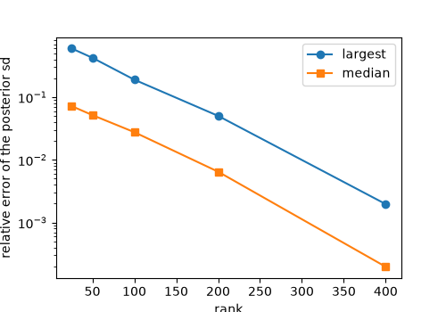

A problem too large to factor: the variational method#
fips.solve(problem) factors an \(m \times m\) or an \(n \times n\)
matrix and forms \(H S_0\) (\(m \times n\)). With an hourly state on a
fine grid and a year of observations, both \(n\) and \(m\) pass
\(10^5\), and then none of them fits in memory. The rule: give \(H\)
as a sparse matrix (or as its products), keep the prior as Kronecker
factors, and solve with fips.solve(problem, "variational", rank=k). It
needs only products, \(H v\), \(H^T w\), the prior’s root through its
factors and solves with \(S_z\), and never forms anything \(n \times
n\) or \(m \times m\). Its estimate is the analytic one, by conjugate
gradients, to cg_tol; its uncertainty is a low-rank posterior: the prior, less
what the k directions the data inform most remove. Check
post.eigenvalues to see whether k was
enough.
When not to use it: when fips.solve(problem) fits in memory, it is
exact, gives every diagnostic at no extra cost, and is often as fast. The
variational method is for the problem it cannot hold. It is also the method for
a forward model with a tangent linear and an adjoint (its products, written as
jvp() and vjp()), whose
Jacobian is never formed: that is incremental 4D-Var (A model with an
adjoint).
One problem, two ways#
A day of hourly fluxes on a 20 by 20 grid (9,600 state elements) and eight sites, each measuring six times an hour (1,152 observations). Each observation sees a plume upwind of its site, in its hour and the two before, drifting with that hour’s wind: a stand-in for STILT footprints, which are sparse and overlap from one observation to the next.
In [1]: import numpy as np
In [2]: import pandas as pd
In [3]: import scipy.sparse as sp
In [4]: import fips
In [5]: from fips.linalg import KroneckerOperator
In [6]: hours, ny, nx, sites = 24, 20, 20, 8
In [7]: n = hours * ny * nx
In [8]: rng = np.random.default_rng(0)
In [9]: site_y, site_x = rng.integers(4, ny - 4, sites), rng.integers(4, nx - 4, sites)
In [10]: wind = rng.normal(0.0, 1.0, (hours, 2)) # cells an hour
In [11]: Y, X = np.meshgrid(np.arange(ny), np.arange(nx), indexing="ij")
In [12]: def plume(s, t, jitter):
....: """The footprint of one observation at site s in hour t: a dict of cell positions and weights."""
....: cells, weights = [], []
....: for back in range(min(3, t + 1)):
....: h, width = t - back, 1.0 + back
....: cy = site_y[s] - (back + 0.5) * wind[h, 0] + jitter[0]
....: cx = site_x[s] - (back + 0.5) * wind[h, 1] + jitter[1]
....: w = np.exp(-((Y - cy) ** 2 + (X - cx) ** 2) / (2 * width**2)) / width**2
....: keep = w > 1e-3
....: cells.append(h * ny * nx + (Y * nx + X)[keep])
....: weights.append(w[keep])
....: return np.concatenate(cells), np.concatenate(weights)
....:
In [13]: m = sites * hours * 6 # six observations an hour at each site
In [14]: footprints = [plume(s, t, rng.normal(0.0, 0.3, 2)) for s, t, _ in np.ndindex(sites, hours, 6)]
In [15]: rows = np.concatenate([np.full(len(c), i) for i, (c, _) in enumerate(footprints)])
In [16]: cols = np.concatenate([c for c, _ in footprints])
In [17]: H = sp.csr_array((np.concatenate([w for _, w in footprints]), (rows, cols)), shape=(m, n))
In [18]: H.nnz / m # cells each observation sees
Out[18]: 358.90625
The prior is a flux of 1 with a standard deviation of 0.5, correlated over 3
hours and 3 cells in each direction: a Kronecker product of three
correlations, kept as its factors (KroneckerOperator).
The footprints are scaled so that the prior’s spread, seen through them, is
three times the observations’ error of 0.1.
In [19]: def exponential(k, length):
....: d = np.abs(np.subtract.outer(np.arange(k), np.arange(k)))
....: return np.exp(-d / length)
....:
In [20]: state = fips.Space({"flux": pd.MultiIndex.from_product(
....: [range(hours), range(ny), range(nx)], names=["hour", "y", "x"])})
....:
In [21]: observed = fips.Space({"ch4": pd.RangeIndex(m, name="obs_id")})
In [22]: prior_cov = fips.Covariance(KroneckerOperator(
....: [exponential(hours, 3.0), exponential(ny, 3.0), exponential(nx, 3.0)], std=0.5), state)
....:
In [23]: root = prior_cov.data._root # the prior's square root, through the factors
In [24]: H = H * (3 * 0.1 / (H @ (root @ rng.standard_normal((root.shape[1], 20)))).std())
In [25]: world = fips.Problem(
....: prior=fips.Vector(np.ones(n), state), prior_cov=prior_cov,
....: obs=fips.Vector(np.zeros(m), observed),
....: obs_cov=fips.Covariance.diagonal(np.full(m, 0.1**2), observed),
....: forward=fips.Operator(H, observed, state),
....: )
....:
In [26]: truth, obs = world.simulate(rng=1)
In [27]: problem = fips.Problem(prior=world.prior, prior_cov=prior_cov, obs=obs,
....: obs_cov=world.obs_cov, forward=world.forward)
....:
This one is small enough for both methods, so the variational answer can be checked against the exact one:
In [28]: exact = fips.solve(problem)
In [29]: post = fips.solve(problem, "variational", rank=200)
In [30]: sd = np.sqrt(exact.variances.values)
In [31]: np.abs(post.estimate.values - exact.estimate.values).max() / sd.min() # in posterior sd
Out[31]: np.float64(1.120009985500065e-06)
In [32]: post.iterations
Out[32]:
d2 cost cg_iterations
iteration
1 12438.282033 1159.59161 122
The estimate is the analytic one far inside its uncertainty (the conjugate
gradients stop when their residual is below cg_tol, 1e-8 of the right side,
by default). It took one solve of about 120 iterations: the data have about
170 degrees of freedom among the 9,600 cells, and conjugate gradients converge
in about as many steps as there are directions that stand out, not in
\(n\). Each iteration is one product with \(H\) and one with
\(H^T\) (and the prior’s root and its transpose, through the factors).
How much rank is enough#
The posterior covariance is \(\hat{S} = R (I + \tilde{H})^{-1} R^T\), with
\(S_0 = R R^T\) and \(\tilde{H} = \gamma R^T H^T S_z^{-1} H R\), the
data’s information on the state whitened by the prior. Its eigenvalues
\(\tilde\lambda_j\) say how many times more the data know about each
direction than the prior did; along that direction the data remove the share
\(\tilde\lambda_j / (1 + \tilde\lambda_j)\) of the prior’s variance, and
these shares add up to DOFS. rank keeps the k largest (by Lanczos,
from products) and leaves the prior in the other directions:
So each variance is the prior’s less a sum over the pairs: too large when k
is too small, never too small, and exact once k reaches the number of
directions the data see. eigenvalues lists the pairs:
In [33]: post.eigenvalues.iloc[[0, 9, 49, 99, 149, 199]].round(3)
Out[33]:
eigenvalue dofs cumulative_dofs
pair
1 1653.927 0.999 0.999
10 260.696 0.996 9.978
50 18.718 0.949 49.140
100 3.413 0.773 92.460
150 1.334 0.571 125.915
200 0.519 0.342 149.092
The last pairs still add about a third of a degree of freedom each: more
directions are informed. The error of the standard deviations, against the
exact ones, as rank grows:
In [34]: ranks = [25, 50, 100, 200, 400]
In [35]: curve = []
In [36]: for k in ranks:
....: low = fips.solve(problem, "variational", rank=k)
....: error = np.sqrt(low.variances.values) / sd - 1
....: curve.append({"rank": k, "dofs": low.dofs, "last pair": low.eigenvalues["dofs"].iloc[-1],
....: "median sd error": np.median(error), "largest sd error": error.max()})
....:
In [37]: curve = pd.DataFrame(curve).set_index("rank")
In [38]: curve.assign(exact_dofs=exact.dofs).round(4)
Out[38]:
dofs last pair median sd error largest sd error exact_dofs
rank
25 24.8589 0.9876 0.0722 0.6005 171.6342
50 49.1402 0.9493 0.0518 0.4247 171.6342
100 92.4604 0.7734 0.0277 0.1901 171.6342
200 149.0917 0.3419 0.0065 0.0503 171.6342
400 170.1831 0.0201 0.0002 0.0020 171.6342
In [39]: import matplotlib.pyplot as plt
In [40]: fig, ax = plt.subplots(figsize=(5, 3.5))
In [41]: ax.semilogy(curve.index, curve["largest sd error"], "o-", label="largest")
Out[41]: [<matplotlib.lines.Line2D at 0x7d1c3f5634d0>]
In [42]: ax.semilogy(curve.index, curve["median sd error"], "s-", label="median")
Out[42]: [<matplotlib.lines.Line2D at 0x7d1c3f5627b0>]
In [43]: ax.set_xlabel("rank")
Out[43]: Text(0.5, 0, 'rank')
In [44]: ax.set_ylabel("relative error of the posterior sd")
Out[44]: Text(0, 0.5, 'relative error of the posterior sd')
In [45]: ax.legend()
Out[45]: <matplotlib.legend.Legend at 0x7d1c3fe3eba0>


The error falls with every pair, from above (the test suite holds that: the
variances never cross the exact ones, and DOFS never falls as rank grows).
At 200 pairs, the median standard deviation is within a percent of the exact
one and the worst about 5% too large; at 400, within 0.2%. Read the last pairs’
dofs: when they are near zero, rank held what the data inform. A solve
warns when the last pair’s eigenvalue is still above 1 (that direction holds
more from the data than from the prior). A pair costs Lanczos two or three
products with \(H\) and \(H^T\); the whole loop above took about ten
seconds on four cores.
Everything the posterior reports comes from the same factors, with nothing
\(n \times n\): DOFS (the sum over the pairs, a lower bound),
dofs_per_element, the gain and the averaging kernel of
the k directions, the information content, cov()
of aggregates (\(W S_0 W^T - (W G) D (W G)^T\)), and exact draws of
\(\hat{S}_k\) (sample()). The standard deviations
of the totals of each six hours, at 50 and 200 pairs:
In [46]: quarter = pd.Series(np.arange(hours) // 6, index=pd.Index(range(hours), name="hour"), name="quarter")
In [47]: W = fips.aggregate.sum(state, by=quarter) # the totals of each six hours
In [48]: pd.DataFrame({k: np.sqrt(np.diag(fips.solve(problem, "variational", rank=k).cov(W).dense()))
....: for k in (50, 200)}).assign(exact=np.sqrt(np.diag(exact.cov(W).dense()))).round(3)
....:
Out[48]:
50 200 exact
0 129.464 119.375 118.465
1 126.381 115.923 114.838
2 123.397 110.980 109.702
3 125.094 114.110 112.698
They are about 10% too large at 50 pairs and 1% at 200, as a typical cell’s are.
with_data() (and so trials()) and
with_gamma() cost one conjugate-gradient solve each: the
eigenvectors depend neither on the observations’ values nor on
\(\gamma\).
What it costs at a size fips.solve cannot hold#
Measured on one cluster node (eight cores of an Intel Xeon Gold 6230R, 48 GB), each solve in its own process with its address space capped at 40 GB, with the plume footprints above on a larger grid (the same plumes, prior and signal-to-noise, with an error of 0.3 and a prior’s correlations of 3 hours and 4 cells):
state \(n\) |
observations \(m\) |
method |
solve |
peak memory |
|---|---|---|---|---|
38,400 |
2,880 |
|
9 s |
2.1 GB |
38,400 |
2,880 |
variational, rank 100 |
3 s |
0.3 GB |
38,400 |
2,880 |
variational, rank 300 |
13 s |
0.5 GB |
38,400 |
2,880 |
variational, rank 600 |
45 s |
0.9 GB |
259,200 |
17,280 |
|
out of memory ( |
above 40 GB |
259,200 |
17,280 |
variational, rank 100 |
41 s |
1.2 GB |
259,200 |
17,280 |
variational, rank 300 |
160 s |
2.8 GB |
fips.solve holds \(H S_0\), \(m \times n\) dense, and factors the
\(m \times m\) innovation covariance: its memory grows as \(m n\). The
variational solve holds the sparse \(H\), the Kronecker factors and
\(G\) (\(n \times k\)): its memory grows as \(n k\), and its time
as its products with \(\tilde{H}\) (each one with \(H\), \(H^T\)
and the prior’s root and its transpose): the CG iterations, about 200 at
both sizes here, and two to three for each pair. The low ranks leave the
standard deviations too large where the data inform more directions than
rank keeps (at 38,400 cells the exact DOFS is 459): the median cell’s is
9% too large at rank 100, 4% at 300 and 0.5% at 600 (the largest 65%, 21% and
4%).
A model with an adjoint#
A forward model whose Jacobian is too large to hold, but which can be run
forward (tangent linear, \(J v\)) and backward (adjoint, \(J^T w\)),
writes those two products in place of jacobian. Here a lognormal flux,
\(F(x) = H (r \circ e^{x})\), on a small grid:
In [49]: class Lognormal(fips.ForwardModel):
....: def __init__(self, H, reference, rows, cols):
....: super().__init__(rows, cols)
....: self.H, self.reference = H, reference
....: def __call__(self, x):
....: return fips.Vector(self.H @ (self.reference * np.exp(x.values)), self.rows)
....: def jvp(self, x, v): # the tangent linear model
....: return fips.Vector(self.H @ (self.reference * np.exp(x.values) * v.values), self.rows)
....: def vjp(self, x, w): # the adjoint model
....: return fips.Vector(self.reference * np.exp(x.values) * (self.H.T @ w.values), self.cols)
....:
In [50]: small = fips.Space({"flux": pd.RangeIndex(60, name="cell")})
In [51]: seen = fips.Space({"ch4": pd.RangeIndex(40, name="obs_id")})
In [52]: H_small = np.abs(rng.normal(size=(40, 60))) * (rng.random((40, 60)) < 0.2)
In [53]: model = Lognormal(H_small, rng.uniform(0.5, 2.0, 60), seen, small)
In [54]: fips.taylortest(model, fips.Vector(rng.normal(0.0, 0.5, 60), small))
Out[54]: True
fips.taylortest() checks both products: the tangent linear against the
model (the remainder of \(F(x + \epsilon v) - F(x) - \epsilon J v\) falls
as \(\epsilon^2\)) and the adjoint against the tangent linear
(\(\langle J v, w \rangle = \langle v, J^T w \rangle\)); an adjoint with a
term missing fails the second. The variational method then solves by
Gauss-Newton, each step a conjugate-gradient solve of the problem linearized
at the last estimate, with the same stopping rule as "gauss_newton"
(A nonlinear forward model):
In [55]: log_truth = fips.Vector(rng.normal(0.0, 0.5, 60), small)
In [56]: lognormal = fips.Problem(
....: prior=fips.Vector(np.zeros(60), small),
....: prior_cov=fips.Exponential("cell", 3.0).with_std(0.5),
....: obs=fips.Vector(model(log_truth).values + 0.05 * rng.normal(size=40), seen),
....: obs_cov=fips.Independent().with_std(0.05),
....: forward=model,
....: )
....:
In [57]: by_products = fips.solve(lognormal, "variational", rank=40)
In [58]: by_products.iterations
Out[58]:
d2 cost cg_iterations
iteration
1 130264.831519 114083.989483 68
2 114003.712451 2315.786242 81
3 2237.555312 84.467890 78
4 6.163438 78.468280 67
5 0.122497 78.384408 67
6 0.025351 78.369842 62
7 0.006698 78.366694 60
8 0.002122 78.365784 47
9 0.000725 78.365483 58
10 0.000252 78.365380 46
11 0.000089 78.365344 46
12 0.000031 78.365331 46
In [59]: newton = fips.solve(lognormal, "gauss_newton", draws=200)
In [60]: np.abs(by_products.estimate.values - newton.estimate.values).max()
Out[60]: np.float64(2.3905648343092167e-06)
The two modes agree to within their stopping rules (both stop when a step is
a thousandth of a posterior standard deviation). "gauss_newton" forms the Jacobian (here from the same
products, a column at a time) and draws the posterior itself; the variational
method never forms it, and its uncertainty is the low-rank Gaussian at the
mode, Laplace’s approximation, which is not the posterior where the model
bends much over the posterior’s spread (Fluxes that stay positive). It has no
with_gamma with a forward model (the linearization depends on
\(\gamma\)); with_data solves again from the last linearization.
Out of this method, for now: bounds on the state, checkpointing an adjoint
model, and a preconditioner for the conjugate gradients beyond the prior’s
root (a problem with observations far more precise than its prior has large
eigenvalues, and the solve takes more iterations; max_cg_iterations caps
them).